Movie Mode
Most cameras have a dedicated movie mode on the mode dial. In this case, it's obvious what movie mode is.
However, the following cameras do not have a dedicated movie mode. For these cameras, Magic Lantern considers the following configurations as movie mode:
Canon 5D Mark II
In LiveView, with movie recording enabled AND LiveView display set to Movie. Tip: you can change LiveView display type from Expo menu.
Canon 50D
In LiveView, with movie recording enabled from ML menu.
When movie mode is active, Magic Lantern will show a Mv symbol on the bottom info bar.
The Q Button
Most cameras have a button labeled as [Q]. A few cameras don't, so you will have to use some other button:
5D Mark II
Use the Picture Style button
50D
Use the FUNC button
500D
Use the LiveView button
Liveview Screen Layout
Magic Lantern uses the available screen space to display operational information in a clear and practical manner. The image shows a screenshot with commonly used ML features enabled.
Key Features
Audio Meters
Shows the audio record levels in dB. The bars become yellow at -12 dB and red at -3 dB.
FPS Display
The current FPS value is displayed with 3 decimal places (25.000, 24.000, 23.976 etc).
Key Shortcuts
Arrow keys can be used to quickly adjust the following settings:
Audio Gain and Input Source
You can select what functions you need from the Arrow/SET shortcuts submenu under Prefs.
ISO and Kelvin WB
You can select what functions you need from the Arrow/SET shortcuts submenu under Prefs.
Shutter and Aperture
You can select what functions you need from the Arrow/SET shortcuts submenu under Prefs.
LCD Brightness and Saturation
You can select what functions you need from the Arrow/SET shortcuts submenu under Prefs.
Magic Lantern Menu
Press ERASE button to bring up the Magic Lantern menu. Use arrow keys, joystick or scrollwheels to navigate. Use SET and PLAY to toggle values. Use Q to open a submenu with more settings. Press INFO or DISP button to get help. In LiveView, press Zoom In to preview the image behind ML menu. Press MENU to hide items that you don't use (to reduce clutter). For cameras without Q: 5D Mark II: press the Picture Style button. 50D: press the FUNC button. 500D: press the LiveView button. One-handed menu navigation for 5D Mark II and 50D (optional): Open ML menu and submenus with a long-press on joystick center key; Navigate ML menu with scrollwheels; Close submenus with a short press of joystick center key (use Left and Right to adjust values); Close ML menu with a short half-shutter press.
Audio
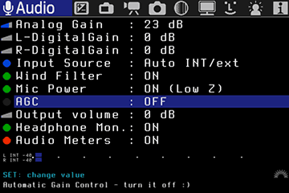
Manual audio controls. This menu is not available on Canon 600D / T3i. The 600D/T3i already has manual audio control, but right now it's not possible to change audio settings from Magic Lantern. You can only use audio meters during recording. Audio tests by Ryan Sauvé Audio_Conclusions
Analog Gain (dB)
Gain applied to both inputs in the analog domain. If you use an external preamp, set this parameter as low as possible; otherwise, set it as high as possible without clipping (audio meters should be green).
L-DigitalGain and R-DigitalGain (dB)
Digital gain applied to left and right channel. Recommended setting: 0.
Input Source
Audio input source for recording:
- internal mic
- L:int R:ext
- external stereo
- L:int R:balanced (internal mic on Left, external mic on Right from both external pins as balanced audio)
- Auto int/ext: camera detects if a mic is plugged in. Int is dual mono, ext is stereo.
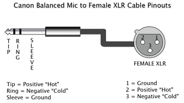
Balanced audio allows for very long cable runs without interference. Usually balanced mics have three pin XLR connectors and it is very easy to out together an XLR to Canon mic input cable. Balanced allows us to use such pro mics with our little Canons and this is a very welcome surprise for audio guys. (source)
Wind Filter
Digital high-pass filter. See AK4646 datasheet p.34.
Mic Power
This is required for internal mic and certain types of external mics, but it reduces input impedance. See AK4646 datasheet p.31 and the Mic power control thread.
ON: input impedance is 2 kOhm;OFF: input impedance is 30 kOhm.
This setting is always ON when input source is either internal mic or L:int R:ext.
AGC
Enable/disable Automatic Gain Control. AGC is applied only in digital domain (i.e. it overrides digital gains, but you can still adjust analog gain). Recommended setting: OFF.
Headphone Monitoring
Audio monitoring tutorial Audio monitoring with headphones, using the A/V cable. Disable this setting if you are using a SD monitor! This feature is not available on 600D/T3i. To use audio monitoring, you need a special cable:
- your Canon A/V cable with a RCA - 3.5mm jack adapter
- a dedicated cable from Sescom
- or you may solder it yourself (you will have to cut your A/V cable).
Warning: mobile phone cables will not work; even if the connector looks similar, it's not identical. You must use the original cable which came with your camera. For details, see Audio monitoring HOWTO on Vimeo group.
Output Volume (dB)
Digital output gain for audio monitoring. It does not have any effect on the internal camera speaker. For best results, you should a pair of low impedance headphones, for example Audio Technica ATH-M50 (38 ohms). With high-impedance headphones, you may have to use a headphone amplifier like FiiO E5.
Audio Meters
Display the input audio level, from -40dB to 0dB; meters become yellow at -12 dB and red at -3 dB. Audio meters are only displayed in movie mode.
Expo
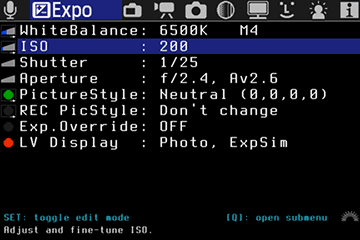
Adjusting the exposure parameters. Most of these settings only work in Manual (photo and video), and some of them work in P, Av and Tv too.
WhiteBalance
Advanced white balance control. The preferred method is Kelvin white balance (range: 1500…15000K). Submenu options:
- Kelvin white balance;
- WBShift G/M: Green-Magenta white balance shift. Useful for fluorescent lighting;
- WBShift B/A: Blue-Amber white balance shift. 1 unit = 5 mireks on Kelvin axis, according to this post;
- Custom RGB multipliers: fine-tune custom white balance;
- Black level: this parameter is applied on RAW data, before applying white balance. Adjust it if you have problems with green or magenta shadows;
- Auto adjust Kelvin + G/M: in LiveView, ML will compute the white balance for the current scene, using the center (200×200 pixels rectangle) as reference gray.
ISO
Advanced ISO control. Color coding:
- orange = Canon ISO with good noise or dynamic range characteristics (100, 160, 200, 320 … 3200).
- green = ISO with negative digital gain applied via DIGIC (80, 90, 160, 320 - obtained by setting ML digital ISO to a negative value). These can have lower noise or better highlight rolloff than their Canon counterparts.
- red = ISO with positive digital gain (avoid these values).
Submenu options:
- Equivalent ISO;
- Analog ISO;
- Canon digital ISO;
- ML digital ISO (DIGIC) - in movie mode: negative values will reduce noise, but may cause color issues in highlights. This feature enables ISO 50, ISO 51200 and many other intermediate or astronomical ISOs.
- Display Gain (night vision) - in photo mode, for previewing night scenes;
- Highlight Tone Priority (which increases dynamic range by 1 stop in movie mode);
- ISO selection (Canon ISOs or ML ISOs) - only used in movie mode;
Overlay
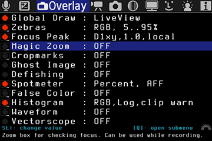
Graphics overlays that can be used in LiveView or in image review mode: histogram, zebras, cropmarks, spotmeter, focus peaking, false color…
Global Draw
Choose when to enable Magic Lantern overlay graphics: (zebra, cropmarks, histograms, audio meters, ML shooting info…):
- in LiveView only
- in QuickReview (photo mode outside LiveView) only
- Both modes
- Disabled
If you used display presets, press Q on this item to switch the presets while you are in ML menu.
Exposure to the right (ETTR)
Automatic Exposure to the Right (ETTR or AETTR) is a technique of setting the exposure of a scene such that few or no pixels are are over exposed (blown out), thus maximizing the information captured without loosing information to over-exposure, and conversely, will also ensure where possible (without over-exposing) the image will be exposed to the right, or brightened to maximize image quality. This may produce a darker or brighter image, but this can be corrected later in post processing. The exposure curve is thus as far to the right as possible without it being clipped. For more information on ETTR, see the page Auto Exposure to the Right.
Zebras
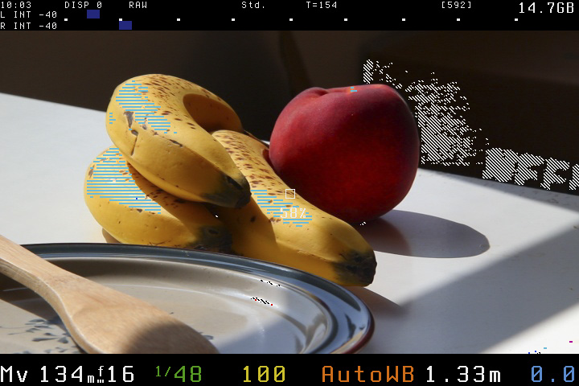
Enable/disable zebra stripes, which indicate overexposed or underexposed areas. Color spaces:
Luma: zebras are computed from Y channel only.RGB: check overexposure for each RGB channel. Clipped channels are displayed in the opposite color (i.e. clipped red shown as cyan, underexposed as white and so on).
You may adjust thresholds for underexposure and overexposure, or you can disable zebras while recording. Note: when using the Technicolor CineStyle picture style, luma will have values between 16 and 255; therefore, you will have to set the underexposure threshold to 16 or greater.
Focus Peak
Focus Peaking demo Focus assist function. High-contrast lines will be marked by blinking dots showing which part of the image is in focus. Methods:
D1xy: computes first image derivative on X and Y and takes the max value. May work better in low light or on noisy sensors.D2xy: approximates second image derivative with a 3×3 Laplacian kernel. May be more accurate in good light.
Other parameters:
Threshold: how many pixels are considered in focus (percentage).Color: either fixed color, or a color coding according to focus intensity.Grayscale img: if enabled, LiveView will displayed as grayscale (but still recorded as color).
To see how it works, check this article from Luminous Landscape.
Magic Zoom
Magic Zoom demo Displays a zoom box for focus assist. Can be used while recording. Trigger modes (not all modes are available on all cameras):
HalfShutter: triggered when you press the shutter button halfway.Focus Ring: triggered by turning the focus ring.Zoom.REC: triggered by pressingZoom Inbutton while recording. If your camera has a LCD sensor, you may also cover it and pressZoom In.FocusR+HalfS: triggered by turning the focus ring, or by pressing shutter halfway.Focus+ZREC: triggered by turning the focus ring, or by pressingZoom Inwhile recording.Zoom In (*): triggered byZoom Inbutton (overrides Canon's default zoom modes). To bypass magic zoom, press both zoom buttons at the same time or cover the LCD sensor.Always On: no trigger key needed. You can use both Canon's 5x/10x zoom and Magic Zoom.
When ML believes you have achieved perfect focus, Magic Zoom will display a focus confirmation (customizable):
Green BarsSplit Screen: when the image is out of focus, the zoom box looks like a split focusing screen from old film cameras.Split Screen with ZeroCross: will reverse the split direction whenever you achieve perfect focus.
Other parameters: size, position, magnification. Notes:
- Zebras, focus peaking and false color are disabled automatically when the zoom overlay is active.
- Focus triggering only works with lenses that report Focus distance, or when you use follow focus / rack focus.
- In some modes, half-pressing the shutter may temporarily hide the zoom overlay.
Original implementation: Magic Circles by AJ.
Cropmarks
Cropmarks or custom grids for framing and composition. 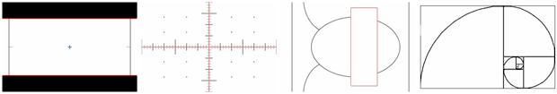
Notes:
- If you use custom cropmarks, place them in
ML/CROPMKSfolder on your SD card and give them short 8.3 names. You can place at most 9 cropmarks on the card. - Get more cropmarks from the ML cropmark repository or draw your own (see Cropmarks).
Cropmarks Tutorial
Ghost image
Shows a transparent overlay which can be created from any image in Play mode. Usage:
- To select the image, go to Play mode and press the
LiveViewbutton. - Move the ghost image in LiveView with arrow keys; center or hide it with
SETor joystick press.
Defishing
Preview the rectified (defished) image from Samyang 8mm fisheye lens, using rectilinear projection. This feature works best in photo mode (outside LiveView). Defishing uses a pre-computed look-up table (LUT). It is possible to create LUT files for any other lens or projection by defishing vram/xy.png with your favorite defishing software, and then running vram/defish-lut.m to get the LUT file. All the required files are found in the ML source tree. Project files (*.PTO) for nona (hugin) are provided for both rectilinear and Panini projections.
Spotmeter
Measure brightness from a small spot in the frame. Possible measurement units:
- Percent (0..100%)
- Raw 8-bit levels (0..255)
- IRE -1..101 (formula used by AJ, which maps 0-255 luma levels to approx. -1..101 IRE)
- IRE 0..108 (formula proposed by Piers, which maps 16-235 luma levels to 7.5-100 IRE)
- RGB (displays HTML-like color codes)
False color
This is a tool for evaluating the exposure. It shows different luma (Y) levels using a color map. You may select one of the following color maps:
Tips:
- you may configure a display preset with False Color and toggle it with a single button press.
- you may also use false colors to highlight 50% and 70% brightness levels, or to reveal color banding, or to check for uniform green screen lighting.
Histogram and Waveform
Using The Video Histogram To Keep Detail in the Highlights These exposure tools will show the distribution of image brightness levels. 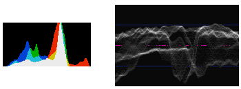
To learn how to read these graphs, see Understanding Histograms and Final Cut Waveform Monitor.
Vectorscope
This tool shows the color distribution with an U-V plot. Useful for color grading. To learn how to read it, see Introducing Color Scopes: The Vectorscope.
Movie
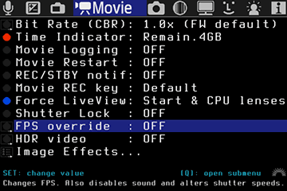
Functions specific to movie mode.
Bit Rate
Controls H.264 bitrate used for video recording. Possible modes:
CBR: constant bitrate. You specify a factor for multiplying default video bitrate, between 0.1x and 3x. CBR 1x is the firmware default setting.QScale: constant quality, variable bitrate (VBR). Available values: -16 … +16. Lower numbers mean higher bitrates.Firmware default: completely disable bitrate control.
Notes:
- Increasing the bitrate may cause recording to stop. You need a fast card.
- CBR actually works by adjusting QScale on the fly; the instant value is displayed near the recording dot.
- In QScale mode, bitrate is completely out of control (don't use it!).
- In CBR mode, QScale will not go outside [-16…+16]. When QScale reaches the extreme values (-16 or +16), bitrate will be different than your CBR setting. Watch the bitrate indicators. This is not a bug, please do not report it.
- You can push the bitrate higher if you record without sound, then use Audio RemoteShot to sync the video with an external audio track.
- You can't change this setting during recording.
- If buffer usage gets too high, ML will pause all CPU-intensive graphics. Change the
BuffWarnLevelsetting to customize this.
Time Indicator
When recording a movie, ML will display a small time counter in the upper right corner, which can be:
Elapsed: duration of the current clipRemain.Card: estimated amount of recording time remaining on the card.Remain.4GB: estimated amount of recording time until reaching 4GB (or until filling the card, whichever comes first).
Unlike Canon's timer which assumes constant bitrate, ML timer assumes variable bitrate and works even if QScale is enabled. However, due to variations in bitrate, the estimated value will fluctuate a lot, and this is normal.
Movie Logging
If this setting is ON, Magic Lantern will write out a metadata file for the each movie to MVI_1234.LOG (numbered after the movie). The log file contains lens and exposure info, as well as a timestamp every time any of the parameters is changed during recording. Log files are placed in the same folder as the movies: DCIM/100CANON/, 101CANON etc. Tip: you can rename LOG files to CSV and import them in MS Excel.
Movie Restart
While this setting is on, movie recording will restart automatically, unless you stop it. There will be a few seconds skipped during restarting.
REC/STBY notify
Custom notifications for recording or standby:
- Red Crossout (highly recommended if you forget to press record)
- Message (it shows
STBYorREC) - Beeps (it will beep when recording starts or stops)
- Blue LED (obvious if your camera has it)
Movie REC key
This option enables you to start/stop movie recording by half-pressing the shutter button. Tip: with this, you can use a wired remote to start/stop recording.
Force LiveView
Force LiveView in Movie mode (bypass the dialog saying Press LV button to activate movie shooting).
- Always: force LiveView even if you use an unchipped lens, or no lens at all. Be careful, you may get dust on the sensor while changing lenses.
- Start & CPU lenses: it will force LiveView at startup, regardless of the lens used. After this, it will only bypass the dialog when a chipped lens is attached (i.e. it will enter LiveView as soon as you attach a chipped lens).
Shutter Lock
This option locks the shutter value in movie mode (you will be able to change it only from ML menu).
FPS Override
This setting alters FPS for all video modes. Only undercranking works well. FPS is changed by altering two timer values (let's call them Timer A and Timer B). Increasing any of these values results in lower FPS. Aside from FPS, changing these timers may alter shutter speed and rolling shutter. Options:
- Desired FPS: choose a value from 0.2 fps to 65 fps. If the desired value is not possible, ML will choose the closest safe option (look at 'Actual FPS' below).
- Optimize for:
- Low light: use this option for recording timelapse with shutter speed set to 1/fps (360 degrees); at high FPS values, you may be able to use other shutter speed values.
- Exact FPS: try to achieve an exact FPS value, such as 24.000 or 30.000 or 12.500. If more exact solutions are found, ML will choose the one with lowest jello effect.
- High FPS: changes FPS without altering shutter speed and allows a slight overcranking (60D, 600D).
- LowJello, 180d: try to minimize the jello effect (caused by rolling shutter), while allowing you to expose at 180 degrees (0.5/fps) if possible.
- High Jello: maximize the jello effect and enable fast shutter speeds. You can use this mode for recording slit-scan frames (distorted images like these, which use the extreme jello effect in creative ways).
- Shutter range: displays the available shutter speed range with current settings. When you use FPS override, Canon menu will still display 1/30 … 1/4000, but the actual shutter speed will be different; read it from ML displays. You can alter shutter speed range by changing the ratio between the two timer values (decreasing timer B will result in faster shutter speeds available).
- Timer A: displays the value of timer A and lets you fine-tune it. ML will re-adjust timer B to match your FPS choice.
- Timer B: displays the value of timer B and lets you fine-tune it. ML will not re-adjust timer A, so this option will let you fine-tune the exact FPS value.
- TG Frequency: displays the crystal oscillator frequency of the FPS circuit driver (read-only, depends on your camera).
- Actual FPS: this displays the current FPS, computed as TG_FREQ / timerA / timerB (read-only).
- Sound Record: by default, ML will disable sound recording when FPS override is enabled; otherwise, audio will go out of sync and recording will stop. Only enable sound if you know what you are doing.
Notes and tips:
- This function will not change the frame rate from the video header; the video will playback at the setting from Canon menu.
- Recommended usage: set FPS to a very low value (for example, 3fps) to record a timelapse.
- Tip: this feature also works in photo mode, making LiveView usable in dark environments. Combine it with display gain.
- To get 180-degree shutter speed at very low FPS, simply discard half of the frames in post.
- If 0.2 FPS is not enough, use Frame Merger (a VirtualDub plugin).
- Exact frame rate may be
roundedto be an exact multiple of PAL/NTSC frame rates. - PAL modes: 25p/50p. Rounded frame rates: 33.333fps, 12.5fps, 11.111fps and so on.
- NTSC modes: 30p/60p/24p. Rounded frame rates: 29.97fps, 23.976fps, 11.988fps and so on.
- For fine-tuning and calibrating custom frame rates, use EOSTimerGen.
HDR video
Magic Lantern HDR Video This feature allows you to shoot a high dynamic range video by alternating ISO every other frame. Select the two ISO values from the submenu. Possible postprocessing workflows:
- user-friendly version and bare-bone version;
- GingerHDR (plugin for Adobe After Effects and Premiere)
- Magic Lantern HDR Compose generator for FCP X
HDR video
Magic Lantern HDR Video
This feature allows you to shoot a high dynamic range video by alternating ISO every other frame. Select the two ISO values from the submenu.
Possible postprocessing workflows:
-
Interframe script: user-friendly version and bare-bone version;
-
GingerHDR (plugin for Adobe After Effects and Premiere)
-
etc (please help me filling the list!)
Image Effects
Custom image effects found by investigating DIGIC registers:
-
Desaturate (lets you record grayscale with any picture style);
-
Negative image;
-
Swap U-V (red becomes blue);
-
Cartoon look (for this to work, set sharpness in your picture style to any nonzero value).
Movie Record (50D)
Enable movie recording on 50D (1920×1080, 30fps, without sound). To start recording, go to LiveView (P/Tv/Av/M) and press SET.
WARNING: Canon 50D was NOT designed to record movies. Keep in mind:
-
This feature was not thoroughly tested by Canon and may be unstable (even if you record without ML).
-
Always disable movie recording when you don't use it.
-
Battery will drain quickly when recording; also, the camera may overheat.
Limitations:
-
The camera will not record sound. You can use an external recorder (for example, Zoom H1, H2 or H4n) and sync the sound in post with a clapperboard.
-
You can't play back movies in the camera.
This setting remains active even if you start the camera with standard firmware (until you clear your settings).
Shutter Button (50D)
-
Leave unchanged: obvious :) -
Block during REC: blocks the shutter and related (AF,*) buttons while recording. In 50D, taking pictures while recording would result in ERR99; with this option, you can avoid taking pictures while recording by mistake. Side effect: this will disable image stabilization during recording. -
Hold during REC (IS): ML will keep the shutter button pressed half-way during recording, which will enable image stabilization (IS). Side effect: you need to press the shutter button half way to turn IS off before the camera will let you stop recording.
Exposure Lock (50D)
Locks the exposure in movie mode. You can also
use the * button (you don't
have to hold it pressed).
Shoot
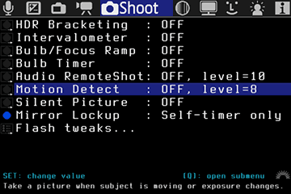
Functions for stills shooting (some of them work for movies, too).
HDR Bracketing
Exposure bracketing for HDR images and timelapses.
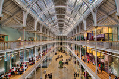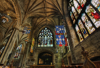
-
In
Mmode, this function does shutter and/or ISO bracketing. In the other modes it does exposure compensation bracketing. -
To start bracketing, take only the first picture and ML will continue the sequence.
-
To preview HDR images in camera, set SET+MainDial: ExposureFusion from Prefs menu, Image review settings, then go to playback mode, hold
SETand turn the main dial (wheel). -
For each HDR picture set, Magic Lantern may also write a bash script for stacking the exposures with enfuse (version 4.x), with optional alignment (align_image_stack). More info: Exposure Fusion: What is it? How does it Compare to HDR? How Do I Do It?.
Intervalometer
18853423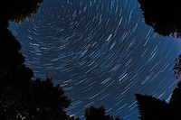19854305
Take pictures or movies at fixed intervals.
You can stop the intervalometer by rotating the
mode dial, by pressing MENU or
PLAY, or by turning off the camera.
Settings (in submenu):
-
Duration between two shots.
-
Start delay (up to 8 hours).
-
Stop after X pictures.
-
In movie mode only: duration of a movie clip.
Tips:
-
To avoid flicker, shoot in manual mode, use manual white balance, avoid short exposure times and use a manual lens (if you use an EF lens, lock the aperture and unscrew it).
-
To make a timelapse without increasing shutter count, do not use the intervalometer; instead, set FPS override to a very low value (for example, 3fps) and start recording.
-
When using the intervalometer in LiveView with
noisymode, your shutter will wear twice as fast than outside LiveView. -
If the intervalometer can't be stopped (it may happen in
crazymode), turn the camera off or open the card door. -
Adjust your auto-off setting to longer than your timelapse interval the camera will turn off before the second shot.
Power Saving:
-
When not in LiveView, press
DISPorINFOto turn the display off. -
In LiveView, ML will turn the display and the sensor off during idle times if you enable this option from
Powersavemenu. -
While the intervalometer is running, the card led will blink once per second to let you know it's alive and kicking.
Bulb/Focus Ramping
29923391
Bulb Ramping allows the capture of a timelapse that gradually changes exposure, compensating for the transition from day to night.
Options:
-
Auto exposure ramping: this option will adjust shutter and ISO automatically, by looking at image brightness of previous shots.
-
Manual exposure ramping: this option will adjust shutter and ISO to follow a fixed exposure ramp (a fixed amount of EV change per shot). Can be used as standalone or combined with auto ramping.
-
Manual focus ramping: this lets you adjust focus gradually while shooting the timelapse. It requires a lens with autofocus and it can only work in LiveView.
Settings for auto ramping:
-
Mode: sunset / sunrise / auto. In sunset mode, the exposure will always increase. In sunrise mode, the exposure will always decrease. This idea was suggested by Tom Lowe on RedUser.net forum.
-
Maximum ramping speed: this parameter is used for computing the optimal smoothness factor. A lower value will reduce flicker, but if the value is twice as low as the real rate of brightness change, ML will lose the ability to ramp correctly. For example, if you set a maximum ramping speed of 0.1 EV / shot, and the scene requires a ramping of 0.2 EV / shot, ML will start flickering heavily.
Quick start guide for auto ramping:
1. Take a picture of your
scene. You will use it to say:
I want my timelapse to be exposed like this
picture.
2. Enable Bulb Ramping and Intervalometer.
3. Leave the camera still while ML runs a calibration step:
-
Make sure you have a static and well-lit scene (any static scene which does not require long exposure should be fine).
-
After calibration, you should get a nice S-curve on the screen.
4. Now you will have to say what tone range to meter for (i.e. highlights, midtones…). Follow the wizard:
-
Use arrow keys to select your reference picture (which you just took).
-
Use the main dial to select the tone range to meter for. You can't perfectly match two images just by varying one parameter (exposure), so you have to choose what's important for you in this picture.
-
For lowest flicker, meter for midtones (choose the 50th percentile, i.e. median, because it's a robust estimation, unlike simple averaging). Leave some headroom for highlights (underexpose a bit).
-
If highlights are important, meter for them (choose 80th percentile for example). You will have to shoot RAW and remove flicker when you develop the RAW files.
-
The algorithm works best when brightness is close to 50% (try not to choose extreme values for it).
-
When you are ready to start, press
SET.
5. Sit back and relax :)
Limits:
-
ISO is chosen between 100 and maximum auto ISO value from Canon menu.
-
Shutter speed is chosen between 1/8000 (lower limit) and the delay between two shots minus two seconds (upper limit). Example: for 10-second intervals, shutter speed will be between 1/8000 and 8 seconds.
-
Aperture is fixed (you can change it manually).
Tips:
-
Don't adjust ISO and shutter before the timelapse, they are fully automatic.
-
Use a ND filter to reduce flicker during daylight.
-
Reduce flicker in post. We recommend VirtualDub with MSU Deflicker plugin (free, works with Windows and Wine). See also Timelapse workflow using free software tutorial.
Technical notes:
-
Exposure is metered using a condition like this (for example): 70% of pixels should be below 50% brightness.
-
Exposure for every shot is computed from previous shots, using a feedback controller algorithm with a smoothing factor.
-
ISO is chosen using the 180 degree rule, so the resulting shutter speed stays between 90 and 270 degrees (that is, between 1/4 and 3/4 of the delay between two shots).
-
Only full-stop ISOs (100, 200, 400 etc) are used (because you are supposed to shoot RAW).
-
Shutter speed can be adjusted with a resolution of 10ms.
-
Frames with fast shutter speeds (less than 1 second in Rebel cameras, less 0.1 seconds in 60D) are taken in Manual mode. You will get flicker.
-
It can go from 1/8000s @ ISO 100 (daylight) to several minutes of exposure time @ ISO 6400 (complete darkness).
-
Exposure algorithm is a feedback controller designed with pole placement - the closed loop response will have two real poles placed at the smoothing factor value. Smoothing factor is computed in such a way that, when scene ramping speed matches the speed selected in menu, ramp is followed at exactly 1 EV behind it.
-
If the lighting changes suddenly a few stops between two shots (for example, you change the ND filters or the aperture), the algorithm should recover completely after 2 or 3 shots. A sudden exposure change is considered when the exposure difference is greater than 2 stops.
Logging:
-
When you use bulb ramping, Magic Lantern will save a log file with the exposure parameters, metered values and so on. Please send this file to developers.
-
These log files can be used to see how well the ramping went and to fine-tune the algorithm.
Bulb Timer
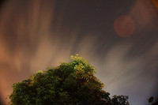
Very long exposures with Bulb mode and ML timer. This feature is useful for night shots and astrophotography.
Bulb timer is started by holding the shutter button pressed halfway for one second (full-shutter press will not work).
Tips:
-
You may cancel the exposure earlier by half-pressing the shutter button.
-
Bulb timer also integrates with other ML features, such as intervalometer or exposure bracketing.
LCDsensor Remote
Start/stop remote shutter release mode with the LCD sensor.
-
⨂ Near: To take a picture, put your hand near the LCD sensor.
-
⨀ Away: Picture is taken when you get your hand away from the sensor. You may combine this setting with Mirror Lockup.
-
〰 Wave: Picture is taken after you wave your hand 3 times near the sensor. You can leave it on without interfering (too much) with normal shooting.
This feature is useful for avoiding camera shake.
In Movie mode, the Wave 〰 setting
is able to start and stop recording movies. The
other modes can only start recording (because
it's too easy to stop recording by
mistake).
While recording, the Near and
Away modes can trigger the
rack focus
operation.
Audio RemoteShot
Start/stop remote audio trigger. To take a picture (or start recording a movie), make some loud noise, for example, clap your hands or pop a balloon.
Tip: with the audio trigger you can sync a video recorded without sound with an external audio track (see this topic)
Be careful: this may trigger the shutter from the sounds made by camera (like focus beep or noise from operating the buttons).
Motion Detect


Motion detection in LiveView.
Trigger modes:
-
Exposure change: it only reacts to brightness changes. Detects large moving subjects which cause significant change in exposure. -
Frame difference: it computes the difference between last two frames A and B (luma channel only); this detects smaller movements which do not change exposure.
Detection time is somewhere between 200 and 300 ms according to DataGhost's speed test; it's faster with silent pictures.
Silent Pictures
18835420
This feature is reserved to very advanced users. It can take pictures in LiveView mode without moving the mirror. When enabled, it saves uncompressed YUV422 frames from the LiveView image buffer when you press the shutter halfway.
-
Make sure you don't have autofocus assigned to half-shutter press (put it on
*or turn it off)
Modes:
-
Silent Picture: simple, low-resolution. Image resolution is usually around 1 or 2 MPix, and depends on the current mode (zoom or not, recording or not, and movie resolution). For almost-FullHD resolution (1720×974), chooseFullHDto record a dummy movie. -
Silent Pic Hi-Res: emulates high-resolution by taking a matrix of small silent pics, in zoomx5mode. You need to have the camera on a tripod and the subject should be static (a picture is taken in a few seconds). Could be useful for focus stacking or for timelapse without increasing shutter count.
Silent picture setting is applied to intervalometer and remote triggers. It will also go to LiveView when you press the shutter half-way. Therefore, you should only enable this setting when you actually use it.
Images are saved in
DCIM/1xxCANON/ after the following
rules:
-
If intervalometer is
OFF, silent pics are named after last picture/movie taken without this function (e.g.12340001.422). You are limited to 10000 silent pictures for eachnoisypicture. -
If intervalometer is
ON, silent pics have names like12345678.422. Tip: useFile Numbering → Manual Resetfrom Canon menu to increase folder number (to sort them easier).
To convert a 422 image to JPEG on the PC, use one of the following programs:
-
422-jpg.py (command-line tool, runs on all platforms, you need to install Python, PIL and numpy).
-
422toimage (Windows only, source code available).
-
YUV422 Convertor (Windows only, closed source).
Mirror Lockup
Mirror lockup. See Canon user guide for details.
Timer+Remote will auto-enable MLU
under one of the following conditions (and
disable it otherwise):
-
self-timer mode is on (either 2 second or 10 second, but not continuous)
-
LCDsensor Remote is in
Awaymode.
Flash tweaks
A few tweaks for flash users:
-
Flash expo compensation (-10..+3 EV). Tip: you may use -10EV to trigger an external flash without putting light on the scene coming from the onboard flash.
-
Flash / No flash: use this when you are not sure whether to use flash or not. Odd pictures (by file number) will be taken with flash, even pictures without flash.
-
3rd party flash in LV: a trick for using a non-Canon flash in LiveView on Rebel cameras, which disables LiveView on half-shutter press. DISABLE this option when you don't use it!!!